Attica
Hyrdra

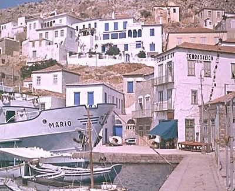
THE SAINT: The Spanish Cow (John Gilling: April 1965)Establishing shot of the South of France.
MAN IN A SUITCASE: The Boston Square (Don Chaffey: February 1967)
McGill is in Corfu to watch Dalby and Packard.
Temple of Poseidon, Sounion
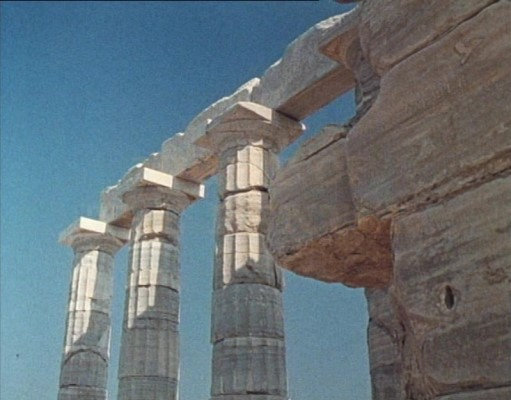
THE BARON: Night of the Hunter (Roy Baker: July 1966)
The Baron and Cordelia Winfield have arrived in a troubled country.
Athens
The Acropolis
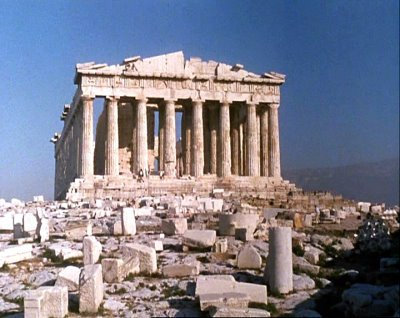
DANGER
MAN: It's up to the
Lady (Peter Maxwell: May 1964)
John Drake arrives in Athens on the trail of Paula Glover.
DEPARTMENT
S: Dead Men Die Twice (Ray
Austin: 1968)
Greece Jason King flies to Greece.
THE SENTIMENTAL AGENT: All Sweetness and Light (Harold French, 1962)
Establishing footage of terminal building and plane arriving at airport.
(Spotted by Jaz Wiseman, March 2011)
Panepistimiou Street

John Drake is staying in the same hotel in Athens as Paula Glover.
(Identified by Sietse Postma, February 2025)
Syntagma Square
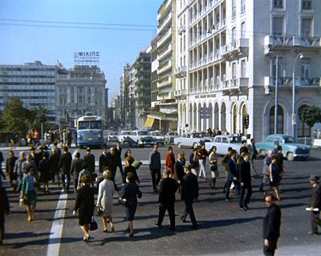
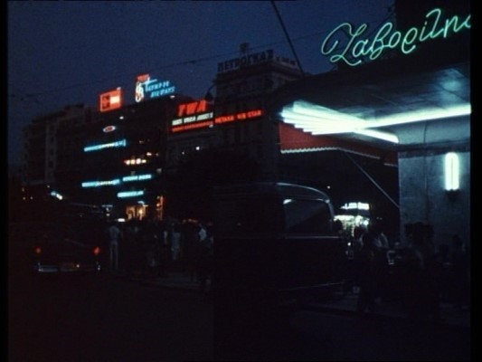
THE BARON: Night of the Hunter (Roy Baker: July 1966)Mannering and Cordella go out for dinner in town.
(Identified by Paul Stroud, June 2015)
THE
CHAMPIONS: Twelve Hours
(Robert Asher: Late 1967)
Craig Sterling is visiting an hotel in Athens (Hotel Grande Bretagne)
when he is called upon to use his super-human powers to their best
advantage.
(Identified by Paul Stroud, May 2008)
DEPARTMENT
S: Dead Men Die Twice
(Ray Austin: 1968)
Greece Jason King Staying at George II Hotel Athens waiting for Madame
Tania Andre.
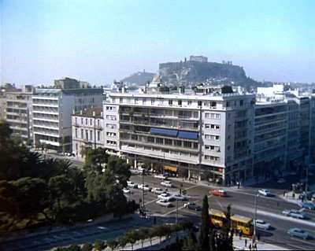
THE
CHAMPIONS: Twelve Hours
(Robert Asher: Late 1967)
Craig Sterling is visiting an hotel in Athens when he is called upon to
use his super-human powers to their best advantage.
(Identified by Paul
Stroud, May 2008)
DEPARTMENT
S: Dead Men Die Twice
(Ray Austin: 1968)
The hotel where Jason King and Annabelle Hurst are based in Greece.
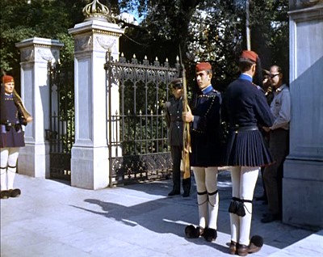
THE
CHAMPIONS: Twelve Hours
(Robert Asher: Late 1967)
Craig Sterling is visiting an hotel in Athens when he is called upon to
use his super-human powers to their best advantage.
DEPARTMENT
S: Dead Men Die Twice
(Ray Austin: 1968)
Greece Jason King and Annabelle Hurst fly to Greece.
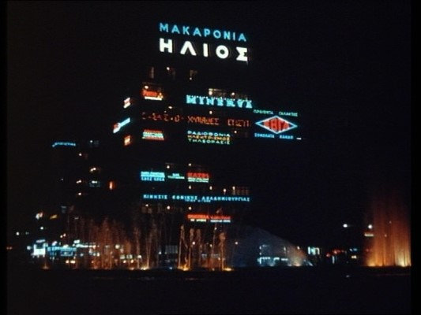
DANGERMAN: No Marks For Servility (Don Chaffey: 1964)
Barnares is having a meeting with Mr. Avvram in Athens.
THE BARON: Night of the Hunter (Roy Baker: July 1966)
Mannering and Cordella go out for dinner in town.
DANGER
MAN: It's up to the
Lady (Peter Maxwell: May
1964)
John Drake is staying in the same hotel in Athens as Paula Glover.
Lousios Gorge

MAN IN A SUITCASE: Night Flight to Andorra (Freddie Francis: December 1967)
Establishing footage of barren river gorge in Andorra.
(Identified by Sietse Postma, May 2022)
Temple of Apollo Epicurius at Bassae
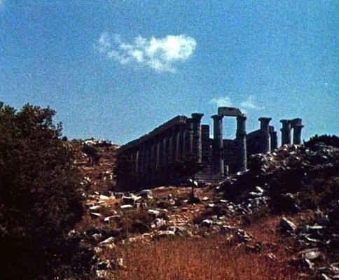
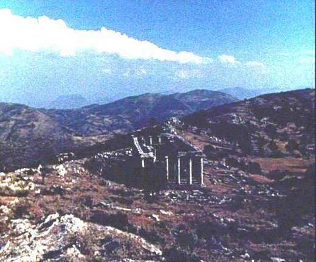
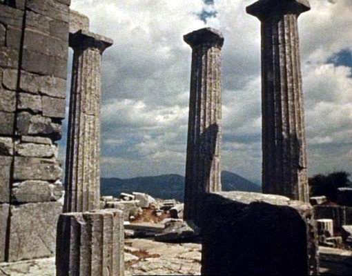
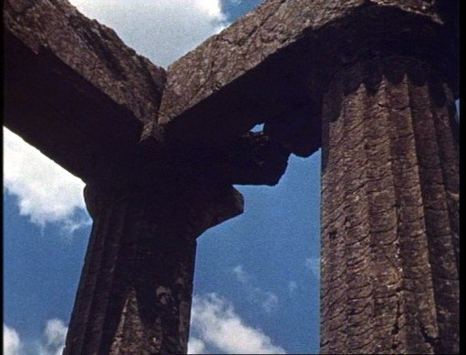
THE BARON: Night of the Hunter (Roy Baker: July 1966)
The Baron and Cordelia Winfield have arrived in a troubled country. That evening Mannering goes to meet an emissary from Madame Nicharos at the Temple of Mithras. Early the following morning Cordelia goes looking for Mannnering. The following night Daniella meets up with Mannering at the Temple.
(Identified by Paul Stroud, June 2015)
Return to Index